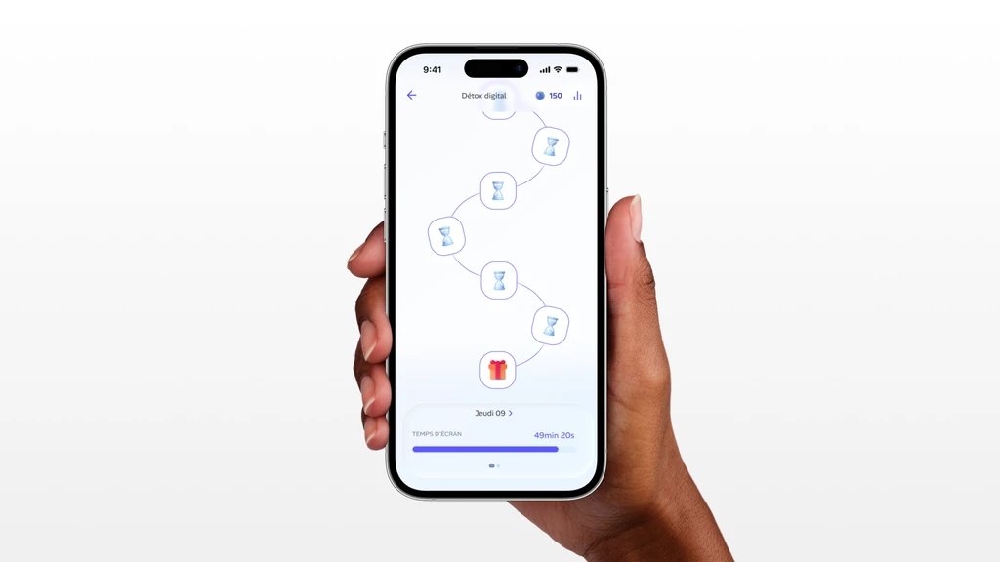
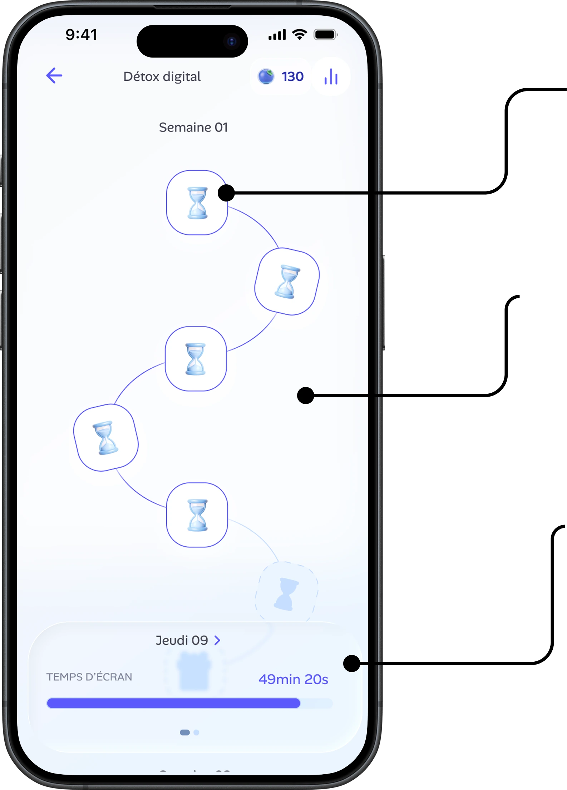
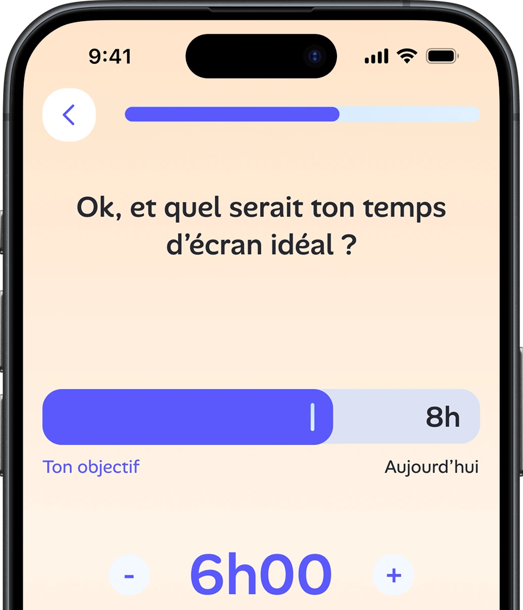
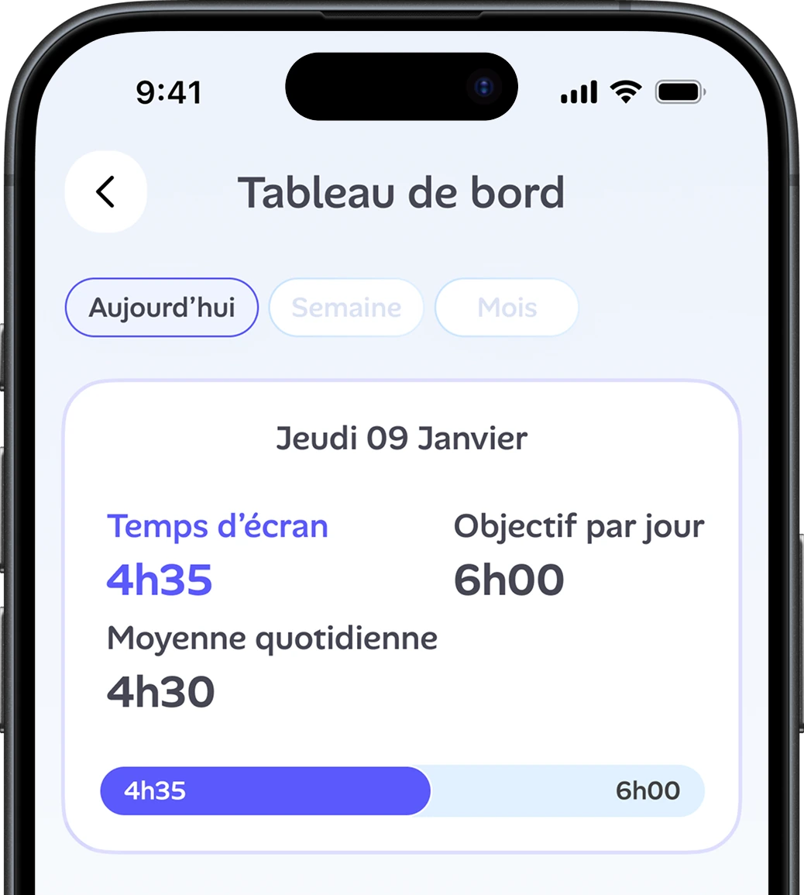
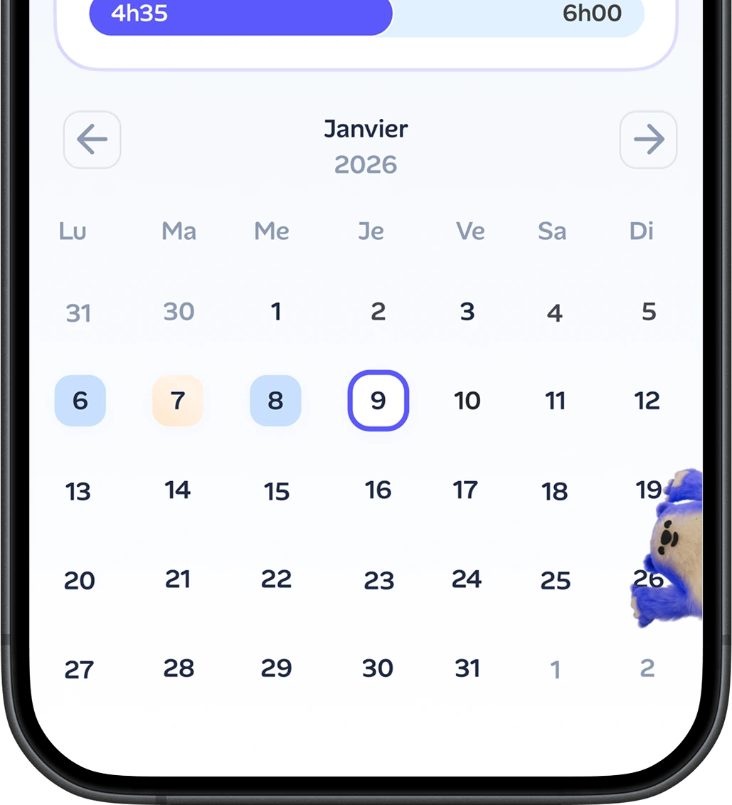
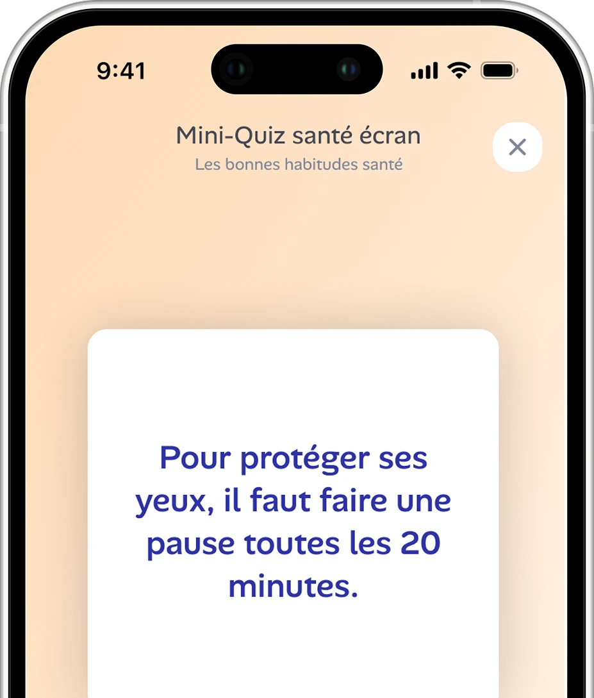
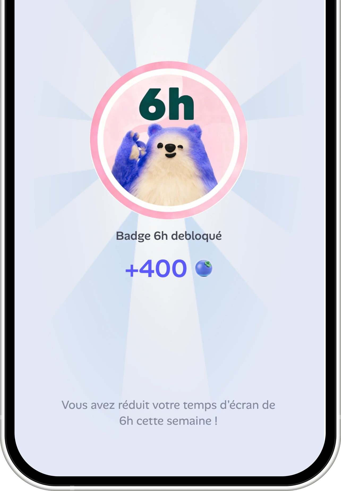

Alan
Digital detox, gamified: turning “spend less time on your phone” into a daily journey of goals, streaks and rewards.
The map
The heart of the experience: a day-by-day path where each validated day moves you forward, keeps the streak alive and unlocks the next step.

Each node is a day. Validate it to move forward and keep your streak alive.
Progress becomes a journey you can see: the loop that keeps people coming back.
Live screen time for the day, with a reward waiting at the finish.
Set your goal
Onboarding opens with one question: what would your ideal daily screen time be? A slider sets the target right next to today’s number, so the gap is visible before you commit.

“So, what would your ideal screen time be?” Here, a 6h00 target against today’s 8h.
Dashboard
A place to reflect rather than scroll: today’s screen time against the daily goal, the running average, and a monthly calendar that marks each day by outcome.


One screen, top and bottom: today’s numbers, then the calendar, where patterns show up at a glance.
Quiz
Learning disguised as a game: short true-or-false questions about screen habits, in the voice of Alan’s health mission.

“To protect your eyes, take a break every 20 minutes.” True or false?
Rewards
Progress pays in Alan’s own currency. Validated days and streaks unlock badges and Blueberries, so the effort stays worth it.

“You cut your screen time by 6h this week.” A badge and 400 Blueberries, Alan’s in-app currency.